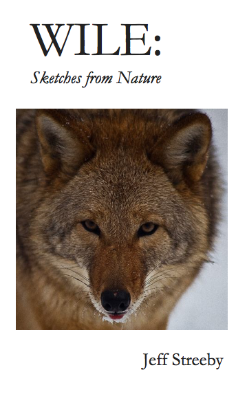

Cynthia Rowe
Woollahra, Australia
A Review of Jeff Streeby’s Wile: Sketches from Nature
Jeff Streeby, Wile: Sketches from Nature, Great Falls, Montana: Buttonhole Press, 2017. 27 haibun, 32 pp. For further details email Jeff Streeby.
Jeff Streeby’s latest book, Wile: Sketches from Nature is a collection of twenty-seven haibun that will appeal to anyone who enjoys the outdoors, who revels in pitting their wits against the natural world. A passion for the English language shines through this chapbook. The visceral imagery grasps the reader and never lets go. This is muscular, colloquial writing—man against the wilderness. And yet the author shows respect, even a fondness, for the prey he traps and writes about so eloquently. A complicity, as though "we are in this together."
This is shown in Lines 2 & 3 of the haiku that concludes the haibun “Flat Set”:
this coyote and I know damn well / how the world works
and the second haiku in the haibun “Float”:
October.
Even in the long days of summer
we all know the score.
Streeby vividly delineates the psychological struggle, the mind games, as he sets about countering the wiliness of his adversary. We see this in the haibun “Spring Set”:
"It’s a con game. Smoke and mirrors."
And in “Step-Down”:
‘They’re smart. It’s got to look like something it’s not. It’s got to look like something else got there first …"
Also illustrating the wrangle, the thrill of the chase, is the concluding sentence of the haibun “Scent Post”:
‘There’s a way to turn every healthy instinct inside out."
A haunting poignancy infuses many of the haiku. As in the haibun “Den Set”:
Ice in his foretop, ice in his tail,
an old horse waiting out winter
Streeby sums up nature, the landscape ever-changing while seemingly remaining the same, by observing:
‘There is only this perpetual sequence of transformations . . . "
The book closes with the haibun “Colophon”, when Streeby becomes contemplative. The prose is poetic, haiku-like. Summer ends. ". . . things cease to slide away. And moss has its chance." A breathtaking responsiveness to the changing season.
There is a page-turning quality to the author’s writing, a pervading universality despite the occasionally esoteric terminology. A series of micro-stories, each as gripping as the one before, imbues the vernacular with meaning. The haiku within each haibun adhere strictly to the seventeen-syllable count, thus forming longer haiku than would be the case in the Japanese language, and their layout is often experimental. Nonetheless, the haiku work well within each haibun, and in the context of the subject matter covered in the book.
Over the years I have read and published countless haiku, a substantial number of haibun, and Wile: Sketches from Nature stands out as a powerful body of work. The reader will dip into this collection time and again, only to unearth something new, to take a fresh view of the biosphere—its challenges and intricacies. Worth visiting and revisiting.
About the writer:
Jeff Streeby is a Pushcart Prize nominee and a nominee for Sundress Press’ Best of the Web Anthology. His haibun “El Paso: July” was selected by Robert Olen Butler for inclusion in The Best Small Fictions 2015 from Queen’s Ferry Press. He is Associate Editor of the multimedia journal OPEN: Journal of Arts & Letters. He holds a Master of Fine Arts degree in poetry from New England College in Henniker, New Hampshire. He is a frequently published mainstream poet whose work has appeared in over 40 literary journals in the US, the UK, Ireland, and Asia, including Contemporary Haibun Online, Haibun Today, Naugatuck River Review, Rattle, and Whiskey Island. Find out more at the Jeff Streeby website.
|